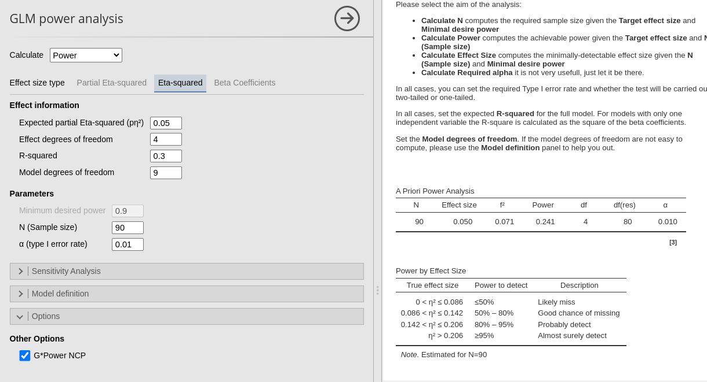

<!DOCTYPE html>

<html>

<head>

<meta charset="utf-8" />
<meta name="generator" content="pandoc" />
<meta http-equiv="X-UA-Compatible" content="IE=EDGE" />


<title>GLM: posthoc power</title>

<script src="site_libs/header-attrs-2.25/header-attrs.js"></script>
<script src="site_libs/jquery-3.6.0/jquery-3.6.0.min.js"></script>
<meta name="viewport" content="width=device-width, initial-scale=1" />
<link href="site_libs/bootstrap-3.3.5/css/bootstrap.min.css" rel="stylesheet" />
<script src="site_libs/bootstrap-3.3.5/js/bootstrap.min.js"></script>
<script src="site_libs/bootstrap-3.3.5/shim/html5shiv.min.js"></script>
<script src="site_libs/bootstrap-3.3.5/shim/respond.min.js"></script>
<style>h1 {font-size: 34px;}
       h1.title {font-size: 38px;}
       h2 {font-size: 30px;}
       h3 {font-size: 24px;}
       h4 {font-size: 18px;}
       h5 {font-size: 16px;}
       h6 {font-size: 12px;}
       code {color: inherit; background-color: rgba(0, 0, 0, 0.04);}
       pre:not([class]) { background-color: white }</style>
<script src="site_libs/jqueryui-1.13.2/jquery-ui.min.js"></script>
<link href="site_libs/tocify-1.9.1/jquery.tocify.css" rel="stylesheet" />
<script src="site_libs/tocify-1.9.1/jquery.tocify.js"></script>
<script src="site_libs/navigation-1.1/tabsets.js"></script>
<link href="site_libs/highlightjs-9.12.0/default.css" rel="stylesheet" />
<script src="site_libs/highlightjs-9.12.0/highlight.js"></script>
<!-- Google tag (gtag.js) -->
<script async src="https://www.googletagmanager.com/gtag/js?id=G-LLVCE05YX9"></script>
<script>
  window.dataLayer = window.dataLayer || [];
  function gtag(){dataLayer.push(arguments);}
  gtag('js', new Date());

  gtag('config', 'G-LLVCE05YX9');
</script>

<style type="text/css">
  code{white-space: pre-wrap;}
  span.smallcaps{font-variant: small-caps;}
  span.underline{text-decoration: underline;}
  div.column{display: inline-block; vertical-align: top; width: 50%;}
  div.hanging-indent{margin-left: 1.5em; text-indent: -1.5em;}
  ul.task-list{list-style: none;}
    </style>

<style type="text/css">code{white-space: pre;}</style>
<script type="text/javascript">
if (window.hljs) {
  hljs.configure({languages: []});
  hljs.initHighlightingOnLoad();
  if (document.readyState && document.readyState === "complete") {
    window.setTimeout(function() { hljs.initHighlighting(); }, 0);
  }
}
</script>


<style type = "text/css">
.main-container {
  max-width: 940px;
  margin-left: auto;
  margin-right: auto;
}
img {
  max-width:100%;
}
.tabbed-pane {
  padding-top: 12px;
}
.html-widget {
  margin-bottom: 20px;
}
button.code-folding-btn:focus {
  outline: none;
}
summary {
  display: list-item;
}
details > summary > p:only-child {
  display: inline;
}
pre code {
  padding: 0;
}
</style>


<style type="text/css">
.dropdown-submenu {
  position: relative;
}
.dropdown-submenu>.dropdown-menu {
  top: 0;
  left: 100%;
  margin-top: -6px;
  margin-left: -1px;
  border-radius: 0 6px 6px 6px;
}
.dropdown-submenu:hover>.dropdown-menu {
  display: block;
}
.dropdown-submenu>a:after {
  display: block;
  content: " ";
  float: right;
  width: 0;
  height: 0;
  border-color: transparent;
  border-style: solid;
  border-width: 5px 0 5px 5px;
  border-left-color: #cccccc;
  margin-top: 5px;
  margin-right: -10px;
}
.dropdown-submenu:hover>a:after {
  border-left-color: #adb5bd;
}
.dropdown-submenu.pull-left {
  float: none;
}
.dropdown-submenu.pull-left>.dropdown-menu {
  left: -100%;
  margin-left: 10px;
  border-radius: 6px 0 6px 6px;
}
</style>

<script type="text/javascript">
// manage active state of menu based on current page
$(document).ready(function () {
  // active menu anchor
  href = window.location.pathname
  href = href.substr(href.lastIndexOf('/') + 1)
  if (href === "")
    href = "index.html";
  var menuAnchor = $('a[href="' + href + '"]');

  // mark the anchor link active (and if it's in a dropdown, also mark that active)
  var dropdown = menuAnchor.closest('li.dropdown');
  if (window.bootstrap) { // Bootstrap 4+
    menuAnchor.addClass('active');
    dropdown.find('> .dropdown-toggle').addClass('active');
  } else { // Bootstrap 3
    menuAnchor.parent().addClass('active');
    dropdown.addClass('active');
  }

  // Navbar adjustments
  var navHeight = $(".navbar").first().height() + 15;
  var style = document.createElement('style');
  var pt = "padding-top: " + navHeight + "px; ";
  var mt = "margin-top: -" + navHeight + "px; ";
  var css = "";
  // offset scroll position for anchor links (for fixed navbar)
  for (var i = 1; i <= 6; i++) {
    css += ".section h" + i + "{ " + pt + mt + "}\n";
  }
  style.innerHTML = "body {" + pt + "padding-bottom: 40px; }\n" + css;
  document.head.appendChild(style);
});
</script>

<!-- tabsets -->

<style type="text/css">
.tabset-dropdown > .nav-tabs {
  display: inline-table;
  max-height: 500px;
  min-height: 44px;
  overflow-y: auto;
  border: 1px solid #ddd;
  border-radius: 4px;
}

.tabset-dropdown > .nav-tabs > li.active:before, .tabset-dropdown > .nav-tabs.nav-tabs-open:before {
  content: "\e259";
  font-family: 'Glyphicons Halflings';
  display: inline-block;
  padding: 10px;
  border-right: 1px solid #ddd;
}

.tabset-dropdown > .nav-tabs.nav-tabs-open > li.active:before {
  content: "\e258";
  font-family: 'Glyphicons Halflings';
  border: none;
}

.tabset-dropdown > .nav-tabs > li.active {
  display: block;
}

.tabset-dropdown > .nav-tabs > li > a,
.tabset-dropdown > .nav-tabs > li > a:focus,
.tabset-dropdown > .nav-tabs > li > a:hover {
  border: none;
  display: inline-block;
  border-radius: 4px;
  background-color: transparent;
}

.tabset-dropdown > .nav-tabs.nav-tabs-open > li {
  display: block;
  float: none;
}

.tabset-dropdown > .nav-tabs > li {
  display: none;
}
</style>

<!-- code folding -->


<style type="text/css">

#TOC {
  margin: 25px 0px 20px 0px;
}
@media (max-width: 768px) {
#TOC {
  position: relative;
  width: 100%;
}
}

@media print {
.toc-content {
  /* see https://github.com/w3c/csswg-drafts/issues/4434 */
  float: right;
}
}

.toc-content {
  padding-left: 30px;
  padding-right: 40px;
}

div.main-container {
  max-width: 1200px;
}

div.tocify {
  width: 20%;
  max-width: 260px;
  max-height: 85%;
}

@media (min-width: 768px) and (max-width: 991px) {
  div.tocify {
    width: 25%;
  }
}

@media (max-width: 767px) {
  div.tocify {
    width: 100%;
    max-width: none;
  }
}

.tocify ul, .tocify li {
  line-height: 20px;
}

.tocify-subheader .tocify-item {
  font-size: 0.90em;
}

.tocify .list-group-item {
  border-radius: 0px;
}

.tocify-subheader {
  display: inline;
}
.tocify-subheader .tocify-item {
  font-size: 0.95em;
}

</style>


</head>

<body>


<div class="container-fluid main-container">


<!-- setup 3col/9col grid for toc_float and main content  -->
<div class="row">
<div class="col-xs-12 col-sm-4 col-md-3">
<div id="TOC" class="tocify">
</div>
</div>

<div class="toc-content col-xs-12 col-sm-8 col-md-9">


<div class="navbar navbar-default  navbar-fixed-top" role="navigation">
  <div class="container">
    <div class="navbar-header">
      <button type="button" class="navbar-toggle collapsed" data-toggle="collapse" data-bs-toggle="collapse" data-target="#navbar" data-bs-target="#navbar">
        <span class="icon-bar"></span>
        <span class="icon-bar"></span>
        <span class="icon-bar"></span>
      </button>
      <a class="navbar-brand" href="index.html">PAMLj</a>
    </div>
    <div id="navbar" class="navbar-collapse collapse">
      <ul class="nav navbar-nav">
        <li>
  <a href="correlation.html">Correlation</a>
</li>
<li>
  <a href="glm.html">GLM</a>
</li>
<li>
  <a href="rosetta.html">Rosetta</a>
</li>
      </ul>
      <ul class="nav navbar-nav navbar-right">
        <li>
  <a href="https://github.com/pamlj/pamlj">View on Github</a>
</li>
      </ul>
    </div><!--/.nav-collapse -->
  </div><!--/.container -->
</div><!--/.navbar -->

<div id="header">


<h1 class="title toc-ignore">GLM: posthoc power</h1>

</div>


<div id="power-analysis-post-hoc-power" class="section level1">
<h1>Power Analysis: post hoc power</h1>
<p><span class="version"> <span class="versiontitle"> PAMLj version ≥
</span> 0.1.0 </span></p>
<p>Here we compare the results of <span class="modulename">PAMLj</span>
with other software that performs power analysis. In particular, we will
compare our results with <a
href="https://cran.r-project.org/web/packages/pwr/pwr.pdf">R pwr
package</a> and <a
href="https://www.psychologie.hhu.de/arbeitsgruppen/allgemeine-psychologie-und-arbeitspsychologie/gpower">G*Power</a>.</p>
<p>We use a few examples from <a
href="https://www.psychologie.hhu.de/arbeitsgruppen/allgemeine-psychologie-und-arbeitspsychologie/gpower">G*Power
manual</a>, then we test some other design and analysis. In all these
example the aim of the analysis is to find the post hoc power given an
effect size, a sample size and the design characteristics.</p>
</div>
<div id="multiple-regression" class="section level1">
<h1>Multiple regression</h1>
<p><i> Multiple Regression - omnibus (deviation of R 2 from zero), fixed
model, p. 33 </i></p>
<p>Here we estimate the post-hoc power for the F-test associated to the
<span class="math inline">\(R^2\)</span> of a model with 5 predictors.
Five predictors means that the model degrees of freedom are 5. Because
the test is on the whole model <span class="math inline">\(R^2\)</span>,
also the the effect DF are 5. The <span
class="math inline">\(R^2\)</span> is transformed into the <span
class="math inline">\(f^2\)</span> effect size with the simple formula
<span class="math inline">\(f^2=R^2/(1-R^2)\)</span>.</p>
<ul>
<li>Aim = power</li>
<li>Expected <span class="math inline">\(R^2\)</span> = .10</li>
<li><span class="math inline">\(f^2\)</span> = 0.1111</li>
<li>Sample Size (N) = 95</li>
<li>Effect DF = 5</li>
<li>Model DF = 5</li>
<li>Alpha = .05</li>
</ul>
<div id="gpower" class="section level3">
<h3>G*Power</h3>
<p></p>
</div>
<div id="r" class="section level3">
<h3>R</h3>
<p>In R, we can use the <code>pwr.f2.test</code> command, just plugging
in the effect size <span class="math inline">\(f^2\)</span> and the
effect DF <span class="math inline">\(u=5\)</span>. However, <span
class="math inline">\(N\)</span> should be inserted as the residuals
degrees of freedom, thus we have <span
class="math inline">\(v=N-u-1=95-5-1=89\)</span></p>
<pre class="r"><code>pwr::pwr.f2.test(f2=.1111,u=5, v=89,sig.level=.05)</code></pre>
<pre><code>## 
##      Multiple regression power calculation 
## 
##               u = 5
##               v = 89
##              f2 = 0.1111
##       sig.level = 0.05
##           power = 0.6735347</code></pre>
</div>
<div id="pamlj" class="section level3">
<h3>PAMLj</h3>
<p>In <span class="modulename">PAMLj</span> we can use both <span
class="option">Partial Eta-Squared</span> or <span
class="option">Eta-Squared</span>, because in the case of the <span
class="math inline">\(R^2\)</span> the two effect size are identical.
For simplicity, we use <span class="option">Partial
Eta-Squared</span></p>
<p></p>
<p>Had we used <span class="option">Eta-Squared</span>, we simply put
the <span class="math inline">\(R^2\)</span> to test both in the effect
size and the <span class="math inline">\(R^2\)</span> field, obtaining
the same results.</p>
<p></p>
<p>We obtain the same results in packages, although we will see that
this is not always the case (see next example).</p>
</div>
</div>
<div id="increase-in-r2" class="section level1">
<h1>Increase in <span class="math inline">\(R^2\)</span></h1>
<p><i> F test: Multiple Regression - special (increase of R2), fixed
model , p. 37 </i></p>
<p>The first example examines a linear model (regression) with <span
class="math inline">\(R_f^2=.30\)</span> with 9 predictors and compare
it to a nested model with <span class="math inline">\(R_n^2=.25\)</span>
with 5 predictors. Basically, the test is aimed at testing the variance
explained by 4 predictors present in the full model but not the nested
model. The variance explained by the 4 predictors is therefore <span
class="math inline">\(R_f^2-R_n^2=.30-.25=.05\)</span>. This is also
called <span class="math inline">\(\Delta R^2\)</span>, but more
formally is a <span class="math inline">\(\eta^2\)</span> with 4 degrees
of freedom evaluated in a model with 9 degrees of freedom.</p>
<p>The <span class="math inline">\(\eta^2\)</span> is transformed into
the <span class="math inline">\(f^2\)</span> effect size with the simple
formula <span
class="math inline">\(f^2=(R_f^2-R_n^2)/(1-R_f^2)\)</span>.</p>
<ul>
<li>Aim = power</li>
<li><span class="math inline">\(R_f^2\)</span> = .30</li>
<li><span class="math inline">\(R_n^2\)</span> = .25</li>
<li><span class="math inline">\(\eta^2\)</span> = 0.05</li>
<li><span class="math inline">\(f^2\)</span> = 0.07143</li>
<li>Sample Size (N) = 90</li>
<li>Effect DF = 4</li>
<li>Model DF = 9</li>
<li>Alpha = .01</li>
</ul>
<div id="gpower-1" class="section level3">
<h3>G*Power</h3>
<p></p>
</div>
<div id="r-1" class="section level3">
<h3>R</h3>
<p>In R, we can use the <code>pwr.f2.test</code> command, just plugging
in the effect size <span class="math inline">\(f^2\)</span> and the
effect DF <span class="math inline">\(u=4\)</span>. Keeping in mind that
the model has <span class="math inline">\(m=9\)</span> degrees of
freedom, the <span class="math inline">\(N\)</span> is inserted as the
residuals degrees of freedom, that is <span
class="math inline">\(v=N-m-1=90-9-1=80\)</span></p>
<pre class="r"><code>f2=.05/(1-.30)
pwr::pwr.f2.test(f2=f2,u=4, v=80,sig.level=.01)</code></pre>
<pre><code>## 
##      Multiple regression power calculation 
## 
##               u = 4
##               v = 80
##              f2 = 0.07142857
##       sig.level = 0.01
##           power = 0.2225083</code></pre>
<p>Notice that the results (<em>power</em>) are similar, but not as
close as before. This is because and G<em>Power and
<code>pwr:pwr.f2.test()</code> use two different computations of the
F-distribution <em>non centrality parameter $“</em>. G</em>Power uses
<span class="math inline">\(\lambda=f^2 \cdot N\)</span>, whereas
<code>pwr:pwr.f2.test()</code> uses <span
class="math inline">\(\lambda=f^2 \cdot (u+v+1)\)</span>. <span
class="modulename">PAMLj</span> allows to choose which one to use. To
obtain the correct power one should adjust the effect size such that the
non-centrality parameter will be correct. One can do this:</p>
<pre class="r"><code>N&lt;-90
u&lt;-4
v=80
f2=.05/(1-.30)
f2adj&lt;-f2*N/(v+u+1)
pwr::pwr.f2.test(f2=f2adj,u=u, v=v,sig.level=.01)</code></pre>
<pre><code>## 
##      Multiple regression power calculation 
## 
##               u = 4
##               v = 80
##              f2 = 0.07563025
##       sig.level = 0.01
##           power = 0.2412965</code></pre>
<p>The power is now identical to the one estimated in GPower.</p>
</div>
<div id="pamlj-1" class="section level3">
<h3>PAMLj</h3>
<p>By default, <span class="modulename">PAMLj</span> employs the GPower
<em>non centrality parameter</em>, yielding the same results as
GPower.</p>
<p></p>
<p>BY de-selecting the option <span class="option">G*Power NCP</span>,
we obtain the same results as in R without adjustment.</p>
<p></p>
</div>
</div>
<div id="anova" class="section level1">
<h1>ANOVA</h1>
<p><i> F test: Fixed effects ANOVA - special, main effects and
interaction p. 27</i></p>
<p>Here we have an ANOVA design <span class="math inline">\(A \times B
\times C\)</span> with <span class="math inline">\(A\)</span> and <span
class="math inline">\(B\)</span> having 3 levels and <span
class="math inline">\(C\)</span> with 4 levels. Thus the overall model
features 36 groups, with <span class="math inline">\(A\)</span> and
<span class="math inline">\(B\)</span> effects having 2 degrees of
freedom, and <span class="math inline">\(C\)</span> having 3 DF. The
researcher is interested in the power of the test associated with the
interaction <span class="math inline">\(A*B\)</span>, with a partial
Eta-squared <span class="math inline">\(p\eta^2=0.05665751\)</span>
(here the value is slightly different than in GPower manual, but this
value honors the f value used in the manual). The interaction will have
<span class="math inline">\(DF=2*2=4\)</span> degrees of freedom, and
the whole model will have <span class="math inline">\(DF=35\)</span>,
the number of groups minus one. Here are the parameters.</p>
<ul>
<li>Aim = power</li>
<li><span class="math inline">\(p\eta^2\)</span> = 0.05665751</li>
<li><span class="math inline">\(f\)</span> = 0.24507</li>
<li>Sample Size (N) = 90</li>
<li>Effect DF = 4</li>
<li>Model DF = 35</li>
<li>Alpha = .05</li>
</ul>
<div id="gpower-2" class="section level3">
<h3>G*Power</h3>
<p>First notice that for this problem, G*Power offers <em>F test: Fixed
effects ANOVA</em> routine, which requires an <span
class="math inline">\(f\)</span> as the effect size . <span
class="math inline">\(f\)</span> is simply the square root of <span
class="math inline">\(f^2\)</span> so it can be computed from the
partial Eta-squared as <span
class="math inline">\(f=\sqrt{p\eta^2/(1-p\eta^2)}\)</span> .</p>
<p>Plugging in the parameters we obtain:</p>
<p></p>
</div>
<div id="r-2" class="section level3">
<h3>R</h3>
<p>As we have seen before, <code>pwr.f2.test</code> command will
underestimate the power due to the fact that the non centrality
parameter is smaller than the one used in G*Power. Nonetheless, we can
get an estimation of the power by adjusting the effect size <span
class="math inline">\(f^2\)</span> such as to match the correct NCP will
be <span class="math inline">\(\lambda=Nf^2\)</span>. The effect DF
<span class="math inline">\(u=4\)</span> and the model DF are <span
class="math inline">\(m=35\)</span>, yielding <span
class="math inline">\(v=N-m-1=108-35-1=72\)</span></p>
<pre class="r"><code>f&lt;-0.2450722
u&lt;-4
m&lt;-35
N=108
v&lt;-N-m-1
f2&lt;-f^2*N/(u+v+1)
pwr::pwr.f2.test(f2=f2,u=4, v=72,sig.level=.05)</code></pre>
<pre><code>## 
##      Multiple regression power calculation 
## 
##               u = 4
##               v = 72
##              f2 = 0.08424054
##       sig.level = 0.05
##           power = 0.4756346</code></pre>
<p>We obtained the same results as in G*Power</p>
</div>
<div id="pamlj-2" class="section level3">
<h3>PAMLj</h3>
<p>We plug in the partial Eta-squared and the required parameters, and
we obtain the same results as before.</p>
<p></p>
<h1>
Comments?
</h1>
<p>
Got comments, issues or spotted a bug? Please open an issue on
<a href="https://github.com/pamlj/pamlj//issues "> PAMLj at github</a>
or <a href="mailto:mcfanda@gmail.com

">send me an email</a>
</p>
</div>
</div>
<div id="back-to-pamlj-rosetta" class="section level1">
<h1>Back to <a href="rosetta.html">PAMLj: rosetta</a></h1>
<p>’</p>
</div>


</div>
</div>

</div>

<script>

// add bootstrap table styles to pandoc tables
function bootstrapStylePandocTables() {
  $('tr.odd').parent('tbody').parent('table').addClass('table table-condensed');
}
$(document).ready(function () {
  bootstrapStylePandocTables();
});


</script>

<!-- tabsets -->

<script>
$(document).ready(function () {
  window.buildTabsets("TOC");
});

$(document).ready(function () {
  $('.tabset-dropdown > .nav-tabs > li').click(function () {
    $(this).parent().toggleClass('nav-tabs-open');
  });
});
</script>

<!-- code folding -->

<script>
$(document).ready(function ()  {

    // temporarily add toc-ignore selector to headers for the consistency with Pandoc
    $('.unlisted.unnumbered').addClass('toc-ignore')

    // move toc-ignore selectors from section div to header
    $('div.section.toc-ignore')
        .removeClass('toc-ignore')
        .children('h1,h2,h3,h4,h5').addClass('toc-ignore');

    // establish options
    var options = {
      selectors: "h1,h2,h3",
      theme: "bootstrap3",
      context: '.toc-content',
      hashGenerator: function (text) {
        return text.replace(/[.\\/?&!#<>]/g, '').replace(/\s/g, '_');
      },
      ignoreSelector: ".toc-ignore",
      scrollTo: 0
    };
    options.showAndHide = false;
    options.smoothScroll = true;

    // tocify
    var toc = $("#TOC").tocify(options).data("toc-tocify");
});
</script>

<!-- dynamically load mathjax for compatibility with self-contained -->
<script>
  (function () {
    var script = document.createElement("script");
    script.type = "text/javascript";
    script.src  = "https://mathjax.rstudio.com/latest/MathJax.js?config=TeX-AMS-MML_HTMLorMML";
    document.getElementsByTagName("head")[0].appendChild(script);
  })();
</script>

</body>
</html>
